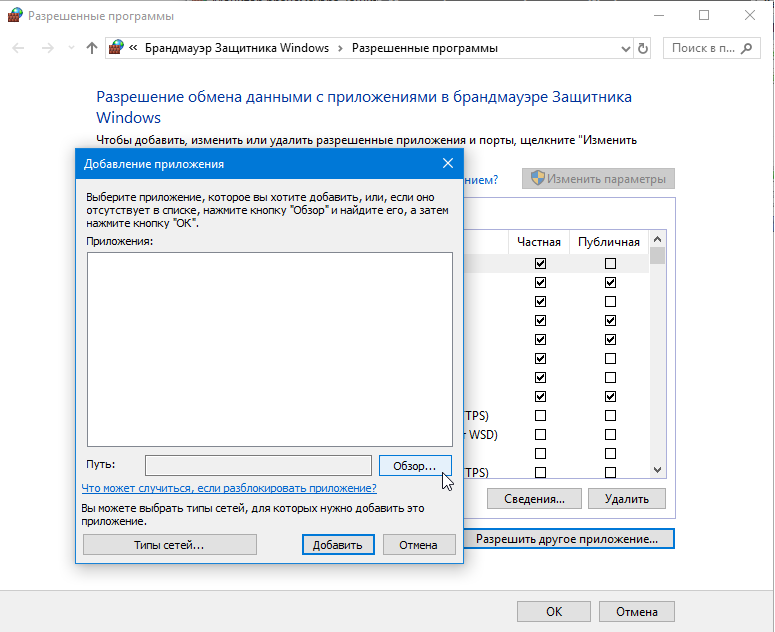
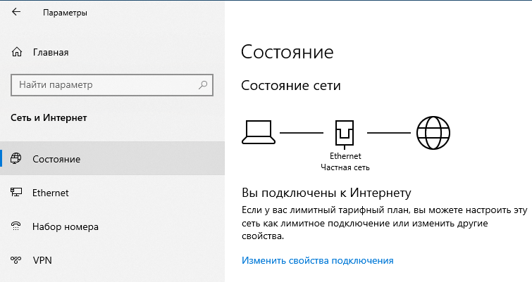
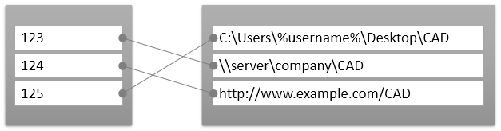
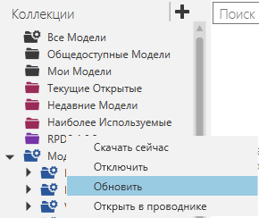
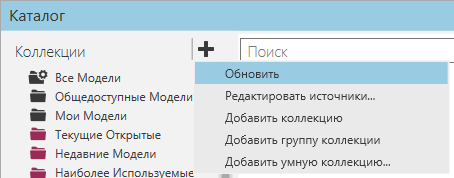

В некоторых случаях может потребоваться устранение неполадок с панелью Каталога.

Трафик
Панель Каталога действует как веб-браузер и использует HTTP (порт 443).

Ваша сеть и брандмауэры должны разрешать трафик от Рационального Производства. В некоторых случаях вам может потребоваться обратиться к сетевому администратору, чтобы разрешить это действие.
Пример. Разрешить трафик с помощью брандмауэра Защитника Windows

В других случаях вы можете подключиться к домашней или менее защищенной сети, когда Каталогу необходимо взаимодействовать с удаленными ресурсами, например, для загрузки онлайн-библиотеки.

Если компьютер, на котором работает Рациональное Производство, не имеет доступа к Интернету, а ваша панель Каталога пуста, обратитесь в службу поддержки и запросите «eCat package», который представляет собой автономную копию библиотеки, поставляемой с Рациональным Производством.
Обновить
Панель Каталога содержит ссылки на источники файлов. Источником может быть локальная папка или ресурс, определяемый URI.

Все источники индексируются панелью Каталога и сохраняются в файл базы данных. R-Pro использует базу данных памяти SQLite. .

В некоторых случаях вам может потребоваться обновить источник или коллекцию, чтобы проиндексировать файлы и обновить сопоставления.

В других случаях может потребоваться обновить все ресурсы.

Журнал
Панель Каталога регистрирует события. Например, при запуске Рационального Производства панель Каталога выполнит обновление для синхронизации файлов в источниках.
[Log opening] 2018-02-16 14:50:55,785 INFO - Run Offline eCat updater 2018-02-16 14:50:56,450 INFO - Scanning the local folder... 2018-02-16 14:50:56,451 INFO - XML loaded, starting to scan local folder in C:\Users\Public\Documents\... 2018-02-16 14:50:57,160 INFO - Scanning the local folder has finished! 2018-02-16 14:50:57,180 INFO - Added files : 0 2018-02-16 14:50:57,180 INFO - Updated files : 0 2018-02-16 14:50:57,180 INFO - Removed files : 0 2018-02-16 14:50:57,181 INFO - No changes to files : 458 2018-02-16 14:50:57,181 INFO - Synchronization finished. 2018-02-16 14:50:57,181 INFO - Offline eCat updater finished! [Log closing] |